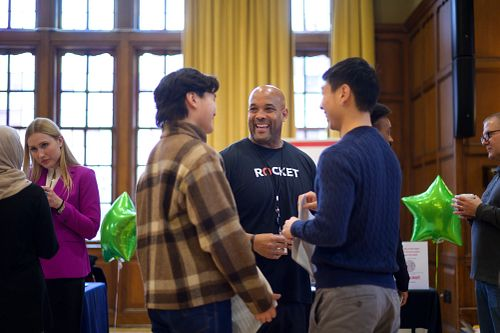

Networking & Building Connections
Building a Strategic Networking Plan
Networking is very important for developing your career. While you are working hard on polishing your application materials and enhancing your soft skills, remember that networking can help you work smarter.
Great things happen when the right people connect. Connecting with professionals could bring you unexpected opportunities when you first enter the industry; it may also help you go further and faster in your career.
To start, you can always make yourself a strategic networking plan. Don’t worry, we have plenty of resources to guide you through building the plan.

Here are the two steps you can follow to make connections.
- Find Alumni You can find alumni through CDO Resources and your own UMSI networks.
- Get A Response Don’t get discouraged by low response rate - average response rate to “cold messages” is around 20%.
Check out this link for more details when following these two steps!
Outreach Messages
Don’t panic about sending outreach emails! Here are some great examples of networking outreach emails, based on different scenarios.
Reaching out to Industry Professional
Subject: UMSI BSI Student Seeking Your Advice
Dear Mr. Johnson,
My name is Alexis, and I will be a senior in the UMSI BSI program at U-M this fall. I’m interested in learning more about careers in UX research, and I saw on LinkedIn that you currently work in UX Research at Google. As an alum, I know your perspective about your current role and the steps you took to get there would be very helpful.
I would be happy to meet via phone or Zoom. I know this may be a busy time, so if we aren’t able to meet within the next two weeks, I’ll be sure to check back in to see if sometime later this summer would work better.
Thank you so much,
Alexis
Following up on a presentation, webinar, panel, etc.
Subject: Following up and seeking additional Information
Dear Juan Morales,
Thank you so much for your presentation and thoughts shared at [name of event]. I attended this and found [insert topic/theme/advice] to be particularly helpful. I am currently a PhD student with the University of Michigan School of Information, and I am exploring options for my next professional step after I finish my degree. I would love to talk to you more about your work in [insert topic] and your professional journey.
I understand you are a busy person, but I was wondering if you would be able to meet virtually for 20-30 minutes in the next week or two. If I don't hear back from you, I’ll be sure to check back in to see if sometime later this term to continue exploring options that may work better.
With gratitude,
Kay
Reaching out to Another UMSI Student
Subject: 1st Year MSI Seeking Your Advice
Dear Ms. Ray,
My name is Hanna, and I am a first-year student in the MSI program, concentrating on UX Design and Research. I found your profile on the UMSI LinkedIn alumni group. May I set up a Zoom call with you to discuss your experience with Booking.com? Your insights would be greatly appreciated, as I am now in the process of applying for an open UX internship position there.
I recognize this may be a busy time for you, so if we are unable to connect by email I’ll try to reach you next week to see whether that is more convenient.
Best wishes,
Hanna